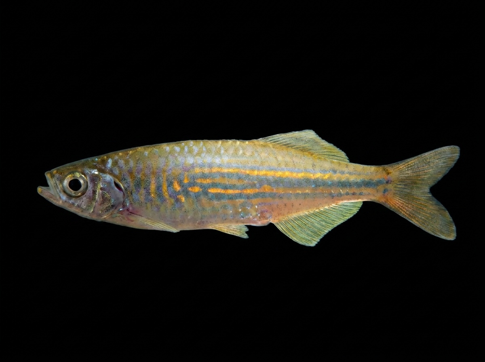

Malabar Danio
Devario malabaricus
The Malabar Danio is a freshwater fish native to Sri Lanka and the Indian subcontinent. In Sri Lanka, it is found in rivers, streams, and freshwater habitats, especially in areas with clear water, moderate flow, and aquatic vegetation. It is an active schooling fish that prefers open swimming areas and is often seen moving in groups near the middle and upper levels of the water column. The species is recognized by its slender body, silvery-golden coloration, and attractive horizontal stripes along its sides. It feeds mainly on small insects, insect larvae, plankton, and other tiny aquatic organisms. The Malabar Danio is an important native species in Sri Lanka’s freshwater ecosystems and is also appreciated in the aquarium trade due to its active behaviour and attractive appearance.